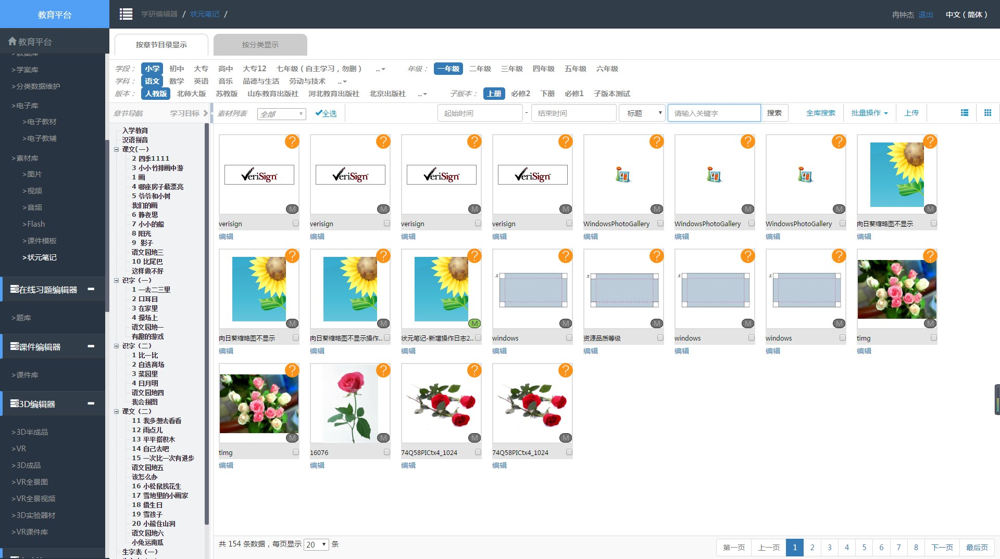
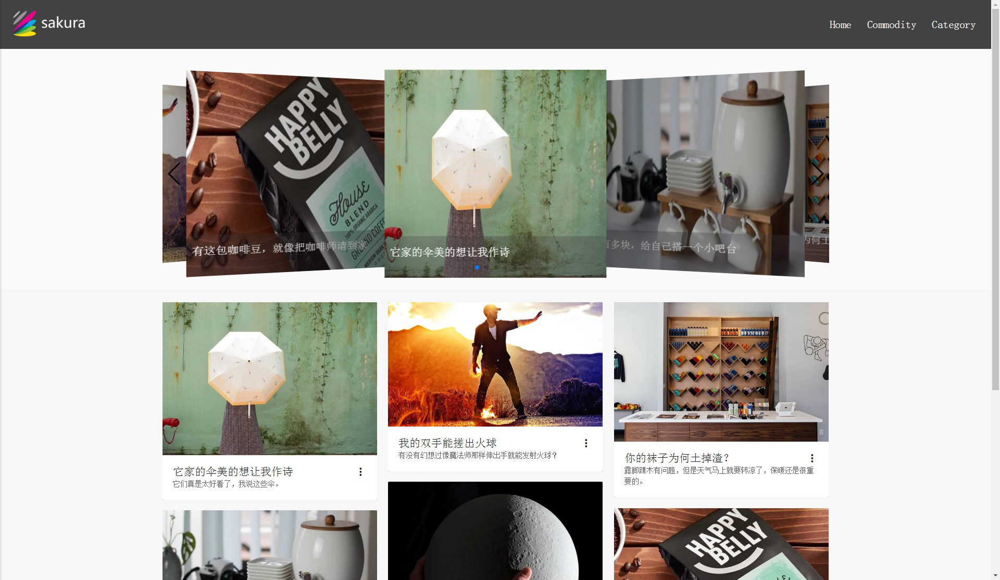
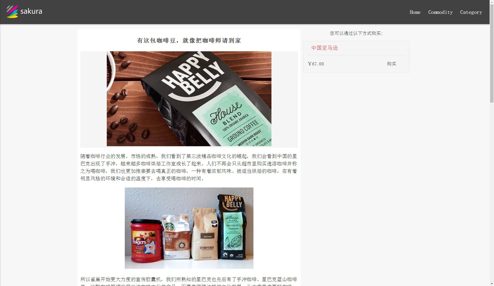
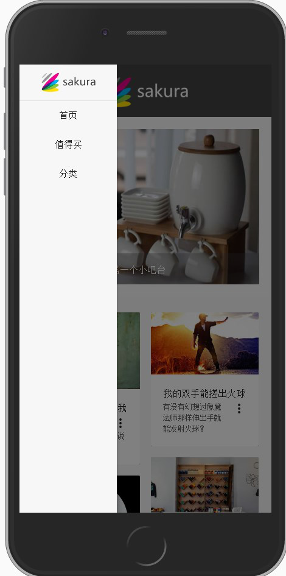

-
- Basic info. 基本信息
- 个人信息: 冉聪杰 / 男 / 23岁
- 教育经历: 本科 / 重庆邮电大学 / 2016年毕业
- 英语水平: CET-4
- 常用ID: rancongjie
- GitHub: github.com/rancongjie
-
- Experience. 项目与工作经验
网龙网络公司（2016.7 - 至今）
-
K12教育资源平台
项目比较老旧并且十分庞大，本人主要负责3D素材管理模块开发,用户权限细粒度重构，与后端rest服务紧密配合， 解决历史遗留问题，增强用户体验
使用 AngularJS 、Sass 、Bootstrap、Seajs等技术来实现前端组件及数据交互
 -
七彩起航新员工编程大赛 源代码(前) 源代码(前) 源代码(后)
独自完成后端rest风格API、内容管理界面，与组员合作完成用户界面，获得二等奖
考虑到是比赛，技术栈“爆炸”， 前端主要主要用到Vue、WebPack、Bootstrap4-alpha、Sass、Fetch、ECMAscript6、 Materialize、Git等,后端主要用到Python2.7、Flask、QiNiu、Mysql、Git等， 部署用到CentOS、Docker、Nginx、Gunicorn等，借此比赛接触IT技术前沿。
  
饿了么(上海)（实习2015.9 - 2016.3）
-
饿了么抽奖系统后台管理
饿了么红包抽奖活动管理单页应用的开发,方便运营人员查看、操作数据,前端架构、编码、测试大部分由自己完成
使用Angualr、bootstrap、gulp、ES6等
-
重构饿了么官方主页
参与重构,进一步优化页面结构改进冗余代码、改进部分JavaScript运行效率,增加部分功能以提高用户体验
末期参与了少许从angualr1向angualr2迁移的工作
个人项目
-
- Skill. 技能清单
Web前端
-
HTML / CSS
掌握常用的HTML标签，知道其的语义，能根据具体场景选用合适的HTML标签。 能够使用CSS实现常见布局，能够运用CSS3实现比较有趣的交互效果，掌握预处理器Sass的使用。
-
JavaScript
掌握JavaScript，能够熟练运行作用域、闭包、this、 原型，能够比较好的做到jQueryFree， 掌握常用DOM和BOM的API，不常见的也能够通过查看MDN后，运用到项目中。
能运用模块化、面向对象的方式编程
了解ES6/ES2015新特性,尽量用在项目中
了解 AngularJS Vue MVVM框架 的使用
-
其他
了解Bower Gulp Npm ebpack 前端仓库和自动化工具
了解前端安全、性能优化方面的一些知识
后端
-
环境
熟悉 Linux 开发环境、 Linux 服务器环境搭建部署，两年 Linux、macOS 日常使用经验
了解 Apache、Nginx web服务器
了解Docker
-
语言
了解 Python，可以快速为前端开发简单的接口。可以使用Python写一些简单的爬虫，进行一些文本处理。
能读懂 java，能够和java工程师配合完成项目
其他
-
Macbook 重度用户,喜欢简约
中度强迫症，尽量做的令自己满意
学习能力强，喜欢新技术,喜欢和志同道合的人一起讨论技术